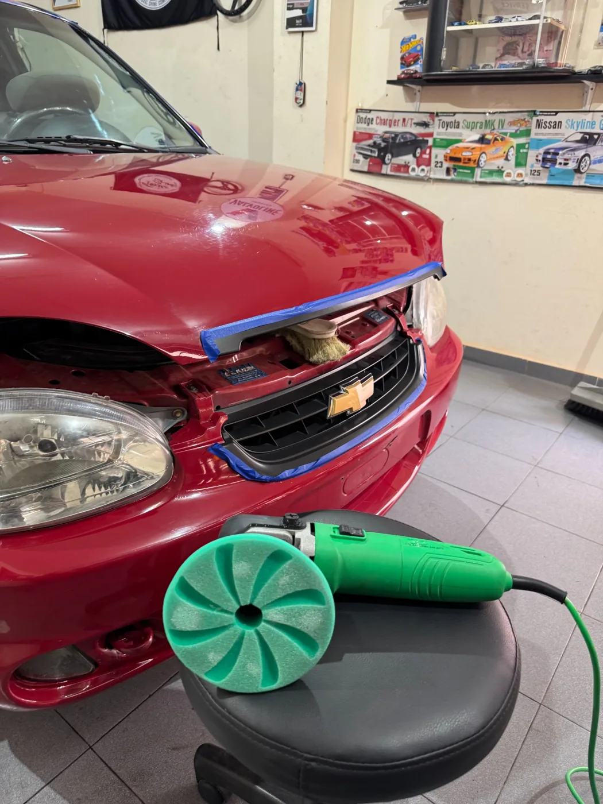

SERVICIO
Detalle del servicio
Cargando información...
Alcance del tratamiento
Los precios y la disponibilidad se determinan mediante consulta previa. La solicitud no constituye una reserva confirmada.
Solicitar este servicio ↗Volver a servicios ←